10月10日（土）・11日（日）11:00–17:00アークヒルズ
- 入場無料・事前予約不要・参加費不要
- 出入り自由
- 3歳前後から体験いただけます
ARK Hills Music Week 2026｜音の遊び場
カラヤン広場で
はじめての楽器に
出会う2日間
スズキ・メソードの指導者・卒業生・子どもたちがカラヤン広場に敷かれた芝生の上で演奏します。演奏の後はヴァイオリン・チェロ・フルート・ピアノに触れられます。
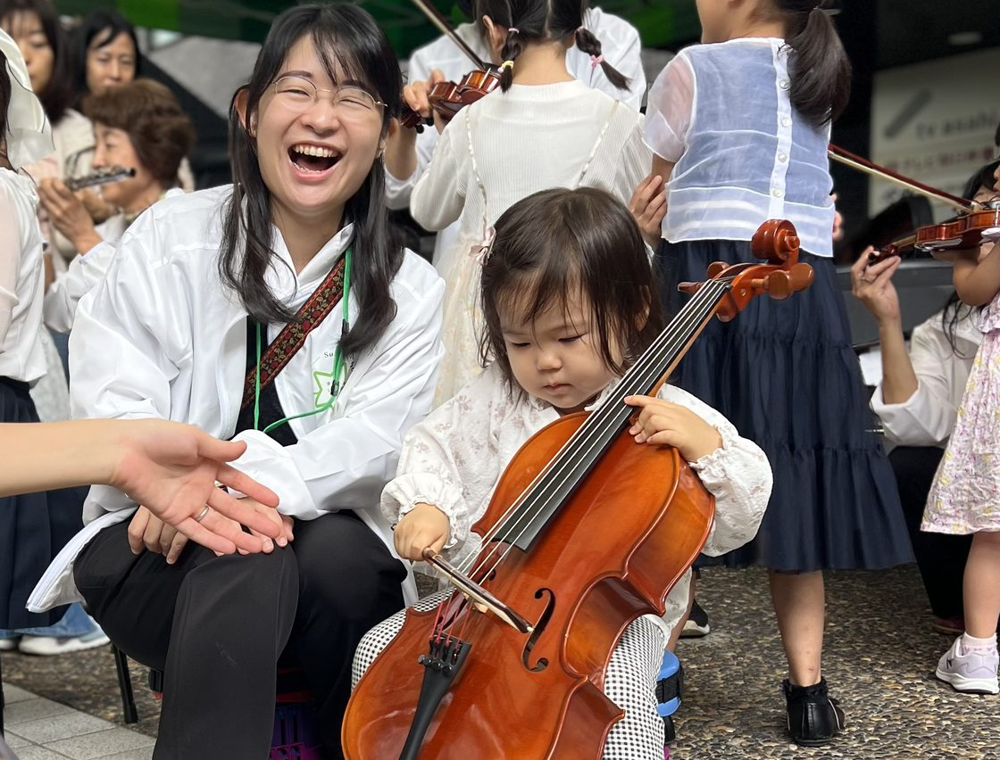
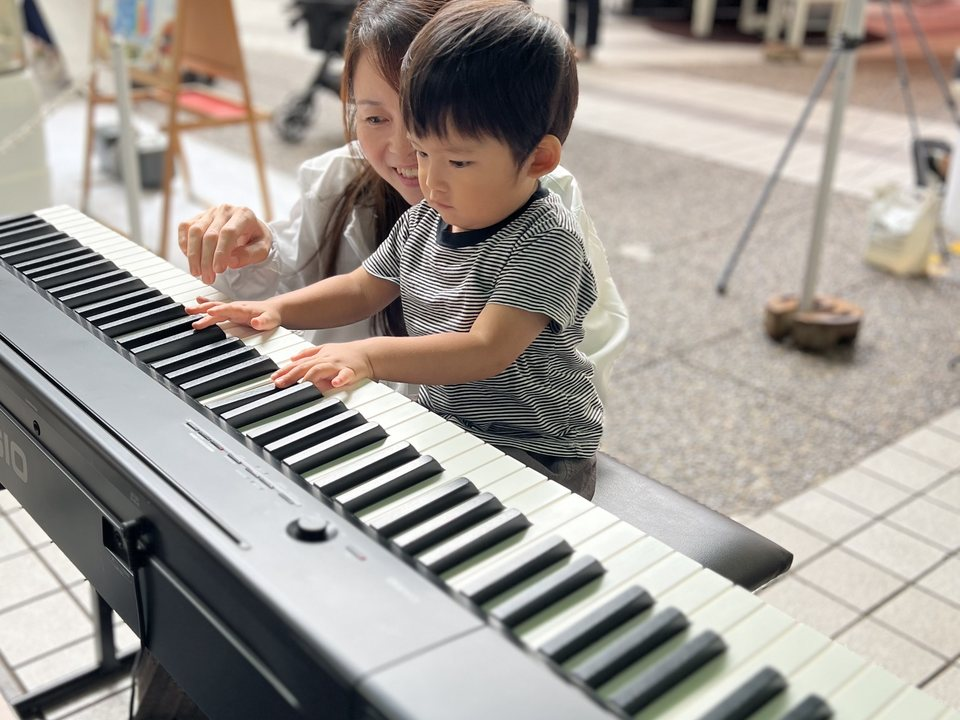
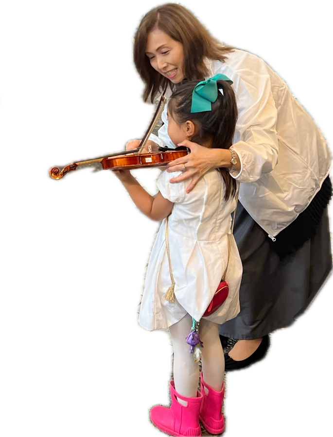
思い立ったらお立ち寄りいただけます
予約・申込不要
当日広場に来ていただくだけです。参加費もかかりません。
途中入場も
途中退出も自由 演奏の途中でも体験の途中でもご自由に出入りいただけます。お子さまの機嫌に合わせて15分だけでも大丈夫です。
走っても
大丈夫な 芝生の広場 静かに座って聴く場所ではありません。屋根のある広場に芝生が敷かれますので、赤ちゃん連れでも動き回る年齢でもお楽しみいただけます。
広場の芝生の上で、すぐそばで音楽が生まれる30分
芝生コンサートではステージと客席を区切らず、子どもから大人までヴァイオリン、チェロ、フルートの奏者が広場の中に散らばって、みなさんと同じ場所から演奏します。
| 日時 | コンサート | 内容 |
|---|---|---|
| 10/10（土） | スズキチルドレン | 子どもたち・OB・OG・指導者 |
| 10/11（日） | スズキ・メソード | 子どもたちによる、毎年恒例のコンサート |
- 曲目
- スズキ・メソードで最初に学ぶ曲を中心に6曲から7曲を予定しています。フィナーレは子どもたちが一番はじめに学ぶキラキラ星変奏曲。
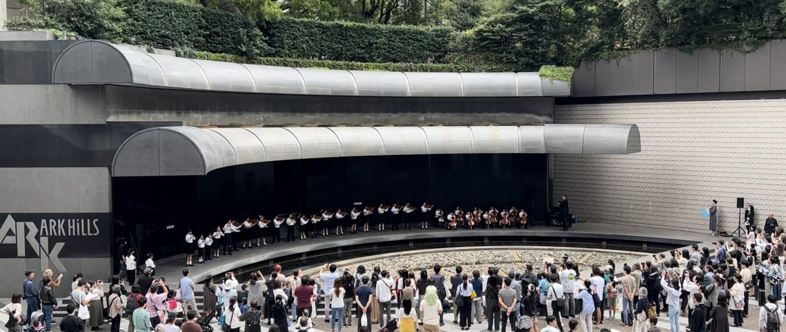
- 保護者の方へ
- 音楽はこんなに身近で、小さな子どもから大人まで一緒に演奏できるんだと感じていただけるコンサートです
当日は
会場にお越しになれない方にも、2日間のコンサートの様子をYouTubeでライブ配信します。
また、楽器体験の様子もSNSでライブ配信予定です。
演奏のあとはそのまま楽器体験へ
聴くだけではありません。広場で楽器に触れて、鳴らしてみましょう。
楽器に触ったことがないお子さまでも楽器を体験できます
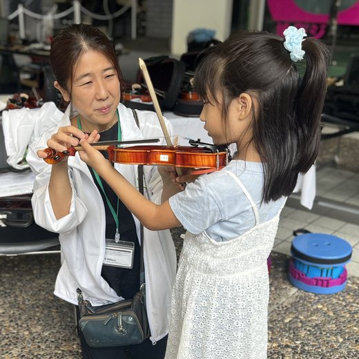
ヴァイオリン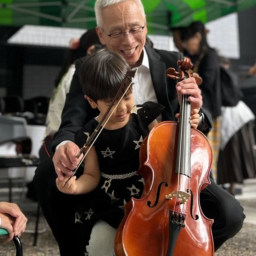
チェロ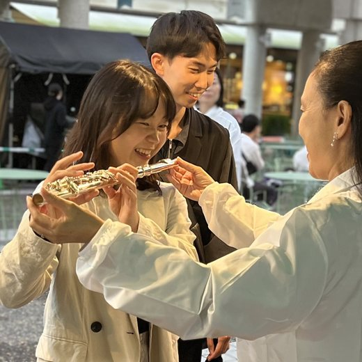
フルート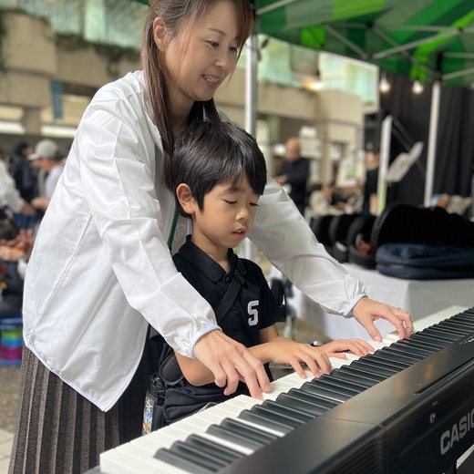
ピアノ
指導者が横につきますので、楽器を触ったことがなくても大丈夫です。
メニューから1曲えらんで注文すると目の前で演奏します
♪ 音楽レストラン
メニューから曲を選んで、オーダー！
缶バッジをつくったら、
すると……
生演奏がやってきます♪
音楽家とやり取りし、
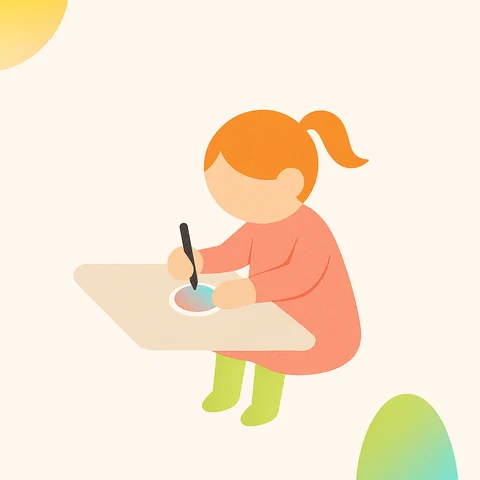
缶バッジをつくる
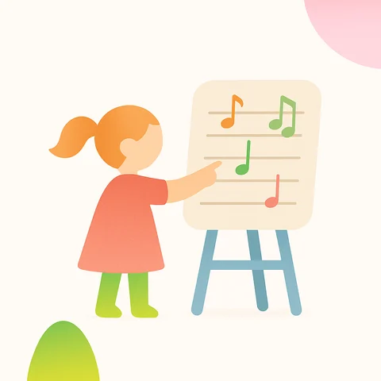
メニューから
1曲えらぶ 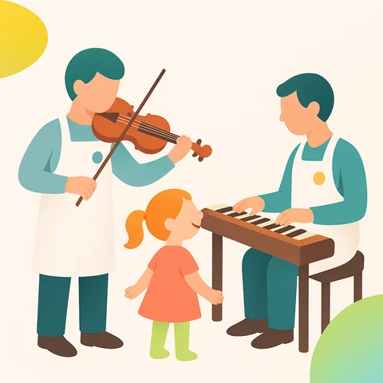
生演奏がとどく
ご来場特典あります
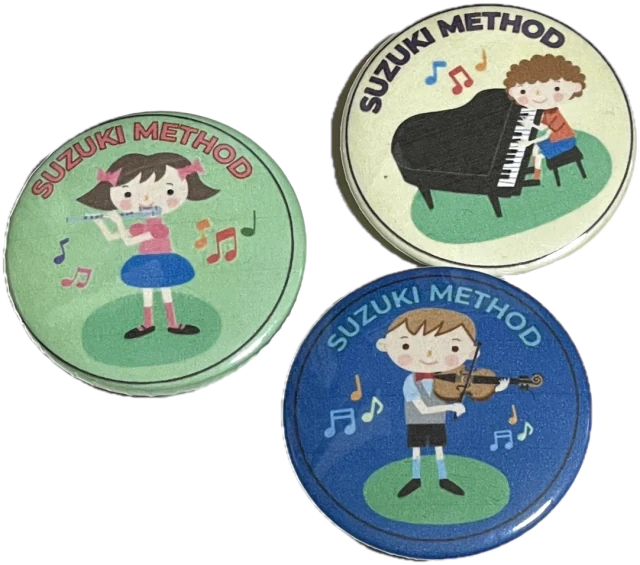
缶バッジ
ブースで自分でつくった缶バッジをそのまま持ち帰れます。完成すると音楽レストランの食券がもらえます。
お一人様１回、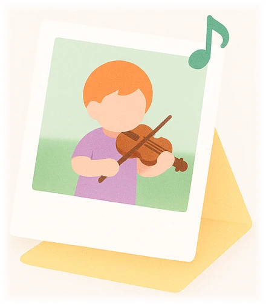
記念フォトカード
楽器体験のあと簡単なアンケートにご協力いただいた方に、お子さまが好きな楽器と一緒にチェキで記念撮影。その場でオリジナル台紙に貼ってお渡し。
各日100名分。はじめて楽器にふれた日を
楽器との出会いを、
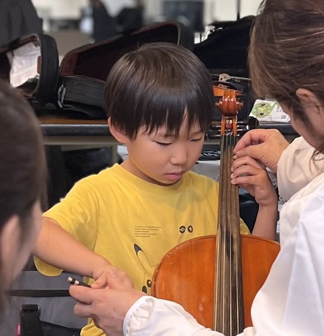
会場・アクセス
- 会場
- アーク・カラヤン広場
（サントリーホール前）。 - 開催時間
- 10月10日（土）・11日（日）
11:00－17:00 - アクセス
- 東京メトロ南北線
「六本木一丁目駅」 3番出口より 徒歩1分 - 東京メトロ銀座線
「溜池山王駅」 13番出口より 徒歩1分
- 東京メトロ南北線
- ベビーカー
- ※要確認
- 雨天時
- 事前に雨天が見込まれる場合、ブースにはテントが設置される予定です。楽器体験の実施については各団体判断とのことです。芝生エリアには屋根のある部分もあります。
会場では、
よくある質問
予約は必要ですか
不要です。当日直接広場へお越しください。
参加費はかかりますか
かかりません。同じ広場で開催される他社のワークショップには有料のものがあります。
何歳から参加できますか
楽器体験は3歳前後からしていただけます。演奏を聴くだけであれば年齢制限はありません。
楽器を触ったことがなくても大丈夫ですか
もちろん大丈夫です。初めて楽器に触れる方にも楽しんでいただけるよう、そばで丁寧にサポートします。
途中で帰っても大丈夫ですか
はい。演奏中でも体験の途中でもご自由にどうぞ。
子どもが泣いたり走り回ったりしそうです
芝生の広場ですので問題ありません。静かに座って聴くことを求める場ではありません。
雨の場合はどうなりますか
一部プログラムが中止となる可能性があります。当日の状況は※要確認（確認先）をご覧ください。

どの子も育つ 育て方ひとつ
スズキ・メソードは世界74の国と地域に広がる音楽教育です。母語を覚えるように聴くことから音楽を学びます。今回演奏する子どもたちも最初はキラキラ星から始めました。
10月10日（土）・11日（日）は
聴いて、鳴らして、